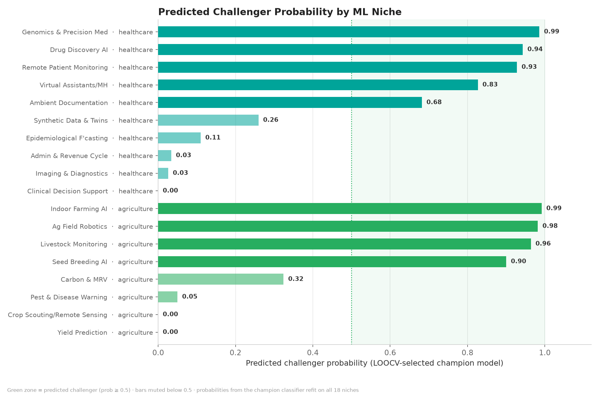
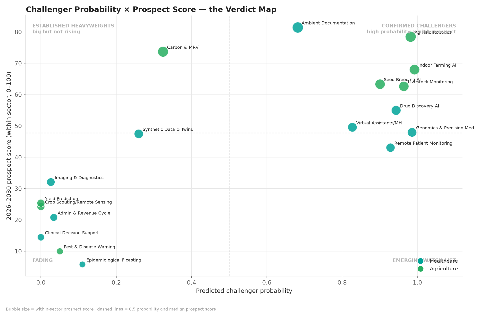
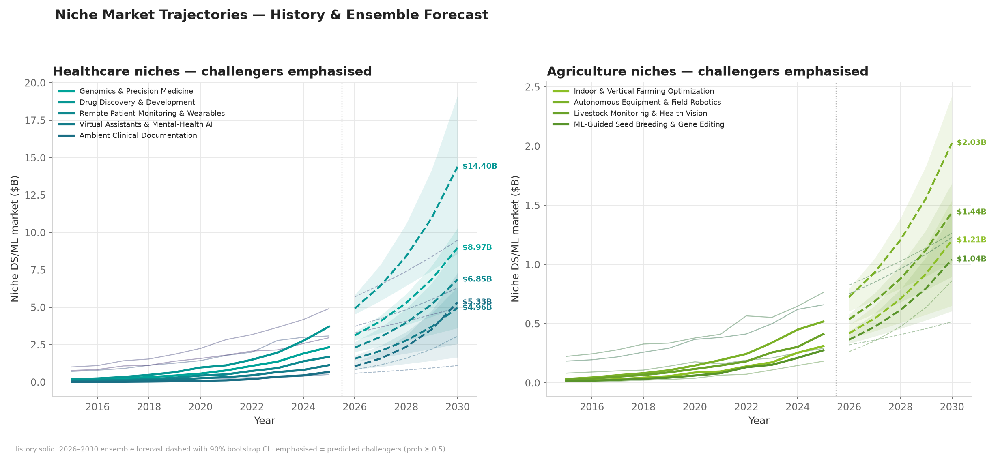
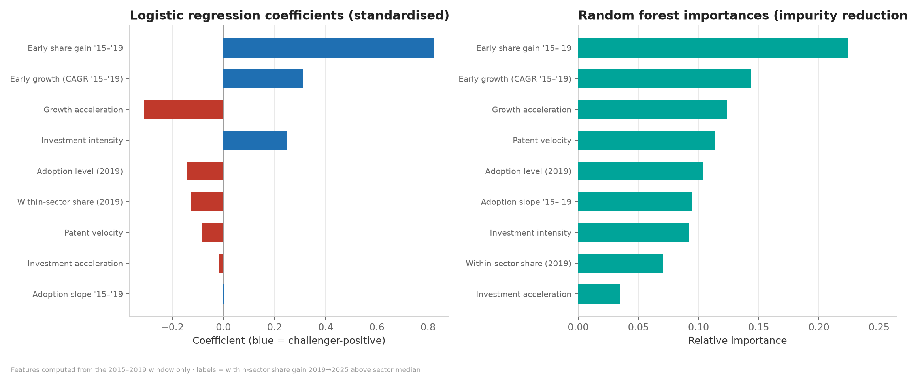
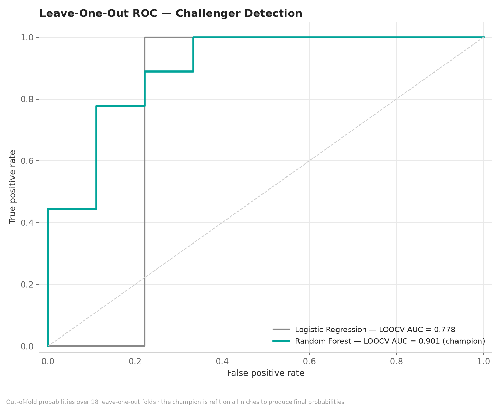

The predicted challenger niches
Probability = what the 2015–2019 data supports. Prospect score = where the 2026–2030 forecast says the opportunity is. Confirmed challengers win on both axes.
Ambient Clinical Documentation — flagged challenger (P=0.68) and highest prospect score of all 18 niches (81.5, +51% CAGR to 2030). The GenAI scribe wave, in numbers.
Carbon & Sustainability MRV scores just P=0.32 despite a 73.7 prospect score — it barely existed before 2021, so the early-window classifier can't see it. Probability ≠ promise; use both axes.
How challengers are detected
Features come from 2015–2019 only; the label is the 2019→2025 outcome (above-median within-sector share gain). Two candidate models, leave-one-out cross-validated over 18 folds; the champion is refit to emit final probabilities.
Model card — LOOCV
| Model | AUC | Accuracy |
|---|---|---|
| Random Forest · 500 trees, depth 3 CHAMPION | 0.901 | 83% |
| Logistic Regression · L2, standardized | 0.778 | 83% |
The nine early-window features
| Early growth (CAGR ’15–’19) | Investment intensity |
| Growth acceleration | Investment acceleration |
| Patent velocity | Adoption level (2019) |
| Adoption slope ’15–’19 | Within-sector share (2019) |
| Early share gain ’15–’19 | — |
All 18 niches, every signal
Click any column header to sort. Green rows = predicted challengers (P ≥ 0.5). Share Δ = within-sector share gain 2019→2025 (the label the model was trained to predict).
| Niche | Sector | P(chall) | Verdict | Share Δ | Score | CAGR | 2030 |
|---|---|---|---|---|---|---|---|
| Genomics & Precision Medicine | Healthcare | 0.99 | Predicted challenger | +4.0 pp | 48.0 | +30.9% | $9.0B |
| Drug Discovery & Development | Healthcare | 0.94 | Predicted challenger | +6.9 pp | 55.0 | +31.1% | $14.4B |
| Remote Patient Monitoring & Wearables | Healthcare | 0.93 | Predicted challenger | +3.2 pp | 43.1 | +32.3% | $6.8B |
| Virtual Assistants & Mental-Health AI | Healthcare | 0.83 | Predicted challenger | +2.5 pp | 49.6 | +34.4% | $5.0B |
| Ambient Clinical Documentation | Healthcare | 0.68 | Predicted challenger | +2.3 pp | 81.5 | +51.0% | $5.3B |
| Synthetic Data & Trial Digital Twins | Healthcare | 0.26 | Established | +1.6 pp | 47.5 | +38.2% | $3.1B |
| Outbreak & Epidemiological Forecasting | Healthcare | 0.11 | Established | −0.5 pp | 5.8 | +16.8% | $1.1B |
| Admin Automation & Revenue Cycle | Healthcare | 0.03 | Established | −5.5 pp | 20.8 | +15.3% | $6.3B |
| Medical Imaging & Diagnostics | Healthcare | 0.03 | Established | −6.4 pp | 32.1 | +14.1% | $9.5B |
| Clinical Decision Support | Healthcare | 0.00 | Established | −8.1 pp | 14.5 | +10.9% | $5.0B |
| Indoor & Vertical Farming Optimization | Agriculture | 0.99 | Predicted challenger | +3.9 pp | 68.0 | +31.1% | $1.2B |
| Autonomous Equipment & Field Robotics | Agriculture | 0.98 | Predicted challenger | +5.4 pp | 78.5 | +31.3% | $2.0B |
| Livestock Monitoring & Health Vision | Agriculture | 0.96 | Predicted challenger | +4.0 pp | 62.7 | +28.4% | $1.4B |
| ML-Guided Seed Breeding & Gene Editing | Agriculture | 0.90 | Predicted challenger | +4.0 pp | 63.4 | +30.5% | $1.0B |
| Carbon & Sustainability Analytics (MRV) | Agriculture | 0.32 | Established | +2.7 pp | 73.7 | +36.3% | $863M |
| Pest & Disease Early Warning | Agriculture | 0.05 | Established | −4.3 pp | 10.0 | +12.0% | $516M |
| Remote Sensing & Crop Scouting | Agriculture | 0.00 | Established | −8.2 pp | 24.3 | +10.6% | $1.3B |
| Yield Prediction & Farm Analytics | Agriculture | 0.00 | Established | −7.4 pp | 25.4 | +13.3% | $1.2B |
Visual evidence
Click any chart to enlarge.





Two layers, one verdict
A supervised classifier (does the early data say this niche is breaking out?) paired with the same backtested ensemble forecast as the sister project (how big does it get by 2030?).
pip install -r requirements.txt && python main.py → panel → forecast → score → classifier → charts → report, seeded and reproducible.Data provenance, stated plainly
Benchmark-calibrated panel: every 2025 niche value sits inside published ranges. The pipeline runs unchanged on real data via --from-csv.
Calibration sources
- Grand View Research — AI in Medical Imaging, Drug Discovery, Genomics
- CB Insights / PitchBook — ambient-AI scribe funding wave (2023–25)
- MarketsandMarkets / Precedence — Precision Agriculture, Agricultural Robots, Livestock Monitoring
- Climate-tech MRV market reporting (soil carbon, Scope-3 verification)
- McKinsey State of AI · Stanford HAI AI Index · US BLS
Known limitations
- Calibrated synthetic inputs — classifier AUC is an upper bound (method demo)
- n = 18 niches — LOOCV AUC is high-variance at this size
- Label is relative (above sector-median share gain) — thresholds shift class balance
- Forecast layer: short series, iid bootstrap, fixed adoption ceilings, no shocks
- Niche boundaries overlap — some double counting